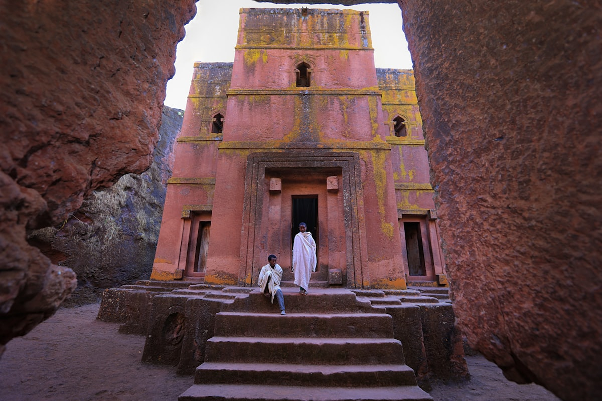
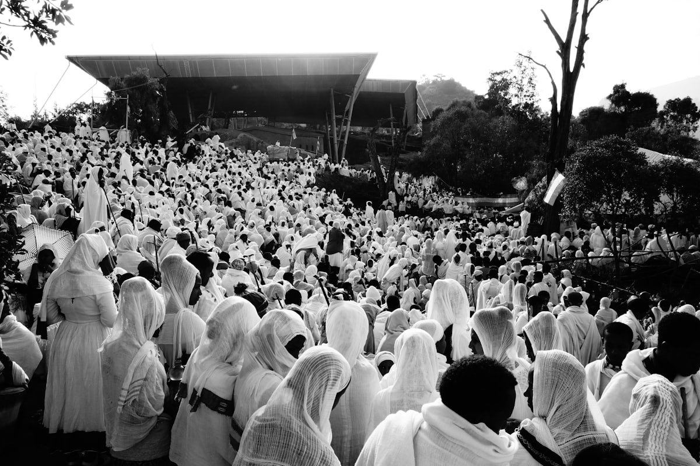
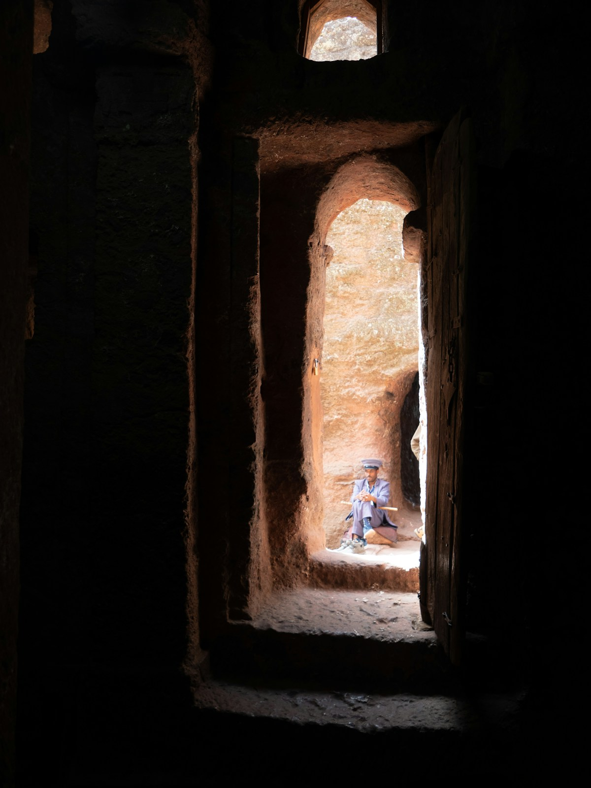
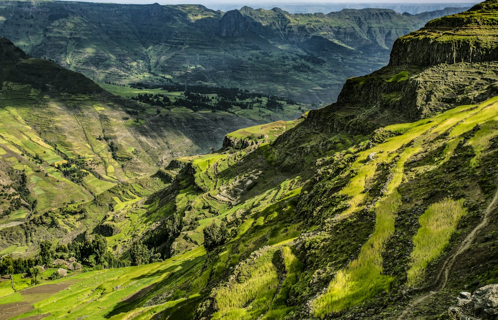
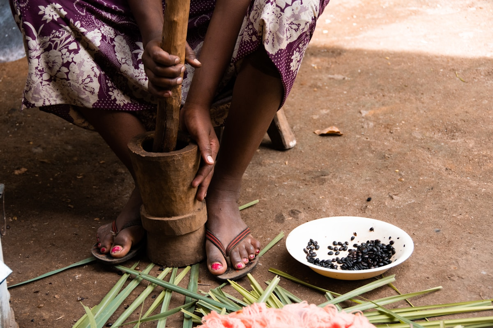
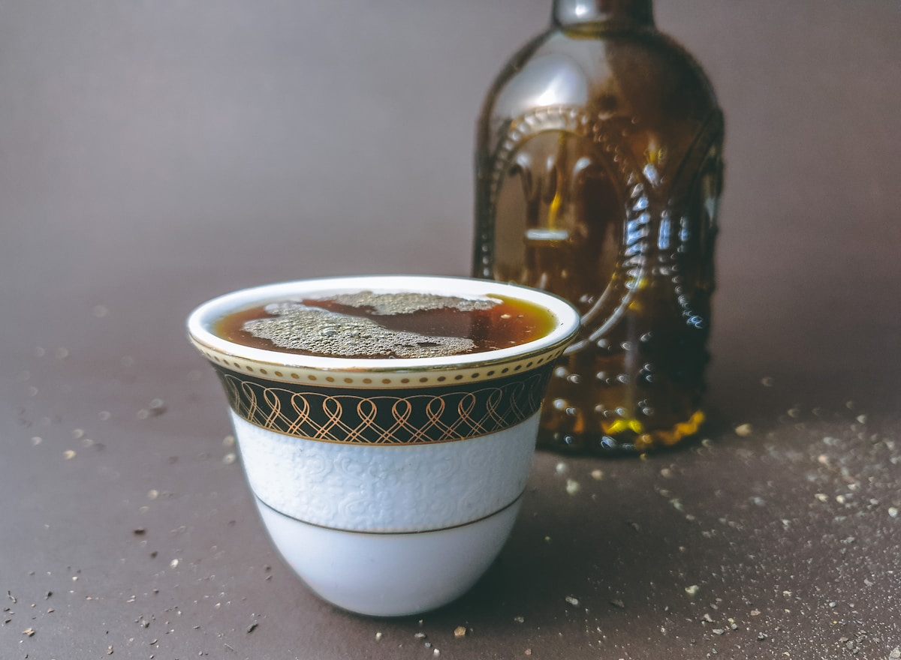
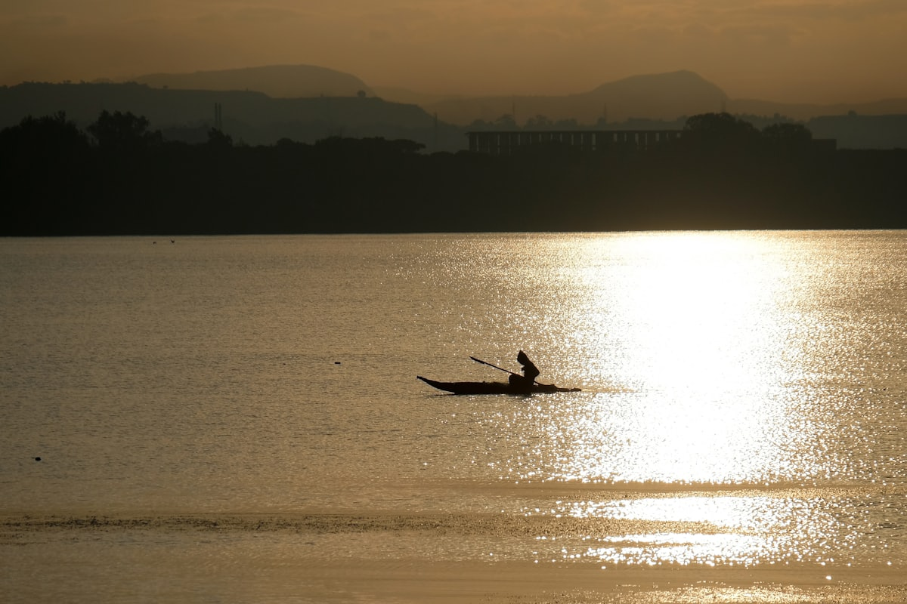
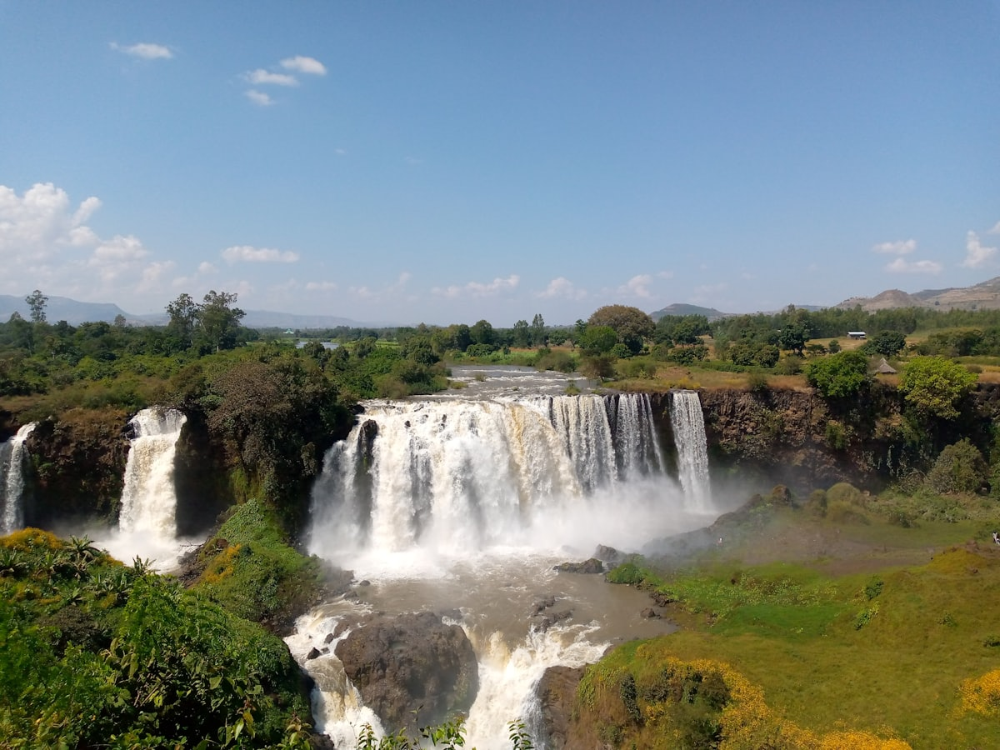

| 事项 | 结论 |
|---|---|
| 事项 | 结论 |
| 签证（最关键） | 中国护照推荐电子签（evisa.gov.et，约 52–72 美元，1–3 个工作日，停留 30 天单次）；落地签仅限亚的斯亚贝巴机场、约 50–64 美元，2023 年后政策时有收紧，优先电子签 |
| 时差与电源 | 比北京慢 5 小时；电压 220V，插座为 C/F 型（欧标两脚圆插），需带转换头 |
| 货币 | 埃塞俄比亚比尔（ETB），1 元 ≈ 15 比尔；现金为主，美元最好用，机场/酒店可换汇 |
| 推荐方案 | 8 天北部圣地环线：亚的斯亚贝巴→拉利贝拉→阿克苏姆→巴赫达尔→贡德尔 |
| 交通方式 | 国内段以埃塞航空短途航班衔接（亚的斯→拉利贝拉约 1h，单程 60–120 美元） |
| 预算（人均） | 经济 12000–18000 ／ 标准 22000–35000 ／ 舒适 45000–65000（人民币） |
| 三件提前事 | ① 办电子签 ② 订国内航班与住宿（旺季 10 月–次年 3 月） ③ 备美元现金与欧标转换插头 |
以下为 8 天 7 晚的推荐节奏：按「首都 → 岩石教堂 → 帝国遗址 → 湖光 → 古堡」的北部大环线推进。每日主景点 ≤2 个，城市间以埃塞航空短途航班+一段公路为主，全程不用自驾。
| 日期 | 行程 | 过夜地 | 主题 |
|---|---|---|---|
| D1 抵亚的斯亚贝巴 | ET605 凌晨起飞约 12h，清晨落地休整，换汇+市区初探 | 亚的斯亚贝巴 | 抵达+倒时差 |
| D2 | 国家博物馆（露西化石）→ 圣三一大教堂 → 咖啡仪式 → 梅尔卡托集市 | 亚的斯亚贝巴 | 首都人文 |
| D3 | 亚的斯✈拉利贝拉（约 1h）：北部教堂群（Bete Medhane Alem 等） | 拉利贝拉 | 飞抵圣地 |
| D4 | 南部教堂群 + 圣乔治教堂 Bete Giyorgis，拉利贝拉博物馆 | 拉利贝拉 | 岩石教堂全日 |
| D5 | 飞阿克苏姆：方尖碑公园、圣母锡安教堂、地下陵墓 | 阿克苏姆 | 帝国遗址 |
| D6 | 飞巴赫达尔：蓝尼罗河瀑布 Tis Abay + 塔纳湖游船湖中修道院 | 巴赫达尔 | 塔纳湖日 |
| D7 | 公路赴贡德尔：法西尔盖比城堡群、德布雷伯汉教堂 | 贡德尔 | 城堡之城 |
| D8 返程 | 贡德尔✈亚的斯亚贝巴转机✈北京，结束行程 | — | 收尾 |
以下为 8 天全程的逐小时执行时间线，可当作「当天打开照着走」的清单。标注 ※ 的可选项视体力与天气取舍。
| 时间 | 事项 |
|---|---|
| 00:10–06:55 | 北京✈亚的斯亚贝巴（ET605 直飞约 12h，A350）。落地办理入境，出示电子签/落地签材料 |
| 08:00–10:00 | 机场换汇（比尔）、买当地手机卡（Ethio Telecom/Safaricom，约 10–20 元套餐） |
| 11:00–13:00 | 入住市区酒店（推荐 Bole 区，靠近机场与商圈），午餐英吉拉餐厅 |
| 15:00–17:30 | 市区初探：圣乔治大教堂外观、梅尔卡托集市门口（不深入）、博莱路咖啡店 |
| 18:30 | 晚餐+早睡倒时差（时差 -5h，北京时间晚 9 点时埃塞当地才下午 4 点） |
| 时间 | 事项 |
|---|---|
| 09:00–11:30 | 国家博物馆（约 50 比尔）：露西化石（人类学镇馆之宝）、人类摇篮展与皇室藏品 |
| 11:30–13:00 | 午餐：doro wat 辣鸡配英吉拉，或本地烤鱼 |
| 13:30–15:30 | 圣三一大教堂（免费，需衣着得体）：埃塞首任皇帝海尔·塞拉西墓葬，壁画精美 |
| 15:30–17:00 | 埃塞咖啡仪式体验（约 100–200 比尔）：炭火烘焙、现磨现煮三杯，配爆米花 |
| 17:30–19:30 | 梅尔卡托集市（免费）：非洲最大露天市场，香料/咖啡豆/织物，注意随身物品 |
| 时间 | 事项 |
|---|---|
| 06:00–07:00 | 亚的斯博莱机场国内航站楼（提前 2h 到） |
| 08:00–09:00 | 亚的斯✈拉利贝拉（约 1h，单程 60–120 美元） |
| 09:30–11:00 | 酒店入住 + 向导接洽，购岩石教堂通票（50 美元，5 天有效） |
| 11:00–13:00 | 北部教堂群：Bete Medhane Alem（世界最大独石教堂）、Bete Maryam 圣母堂 |
| 13:00–14:00 | 午餐：镇上英吉拉/烤鱼 |
| 14:30–17:00 | 继续北部：Bete Golgotha 各各他、Bete Denagel 与战壕隧道系统 |
| 时间 | 事项 |
|---|---|
| 08:30–12:00 | 南部教堂群：Bete Amanuel、Bete Gabriel-Rufael（含地窖与隧道）、Bete Abba Libanos |
| 12:00–13:30 | 午餐：拉利贝拉镇上，尝试 shiro（鹰嘴豆炖） |
| 14:00–16:30 | 圣乔治教堂 Bete Giyorgis（通票含）：十字形独石教堂，拉利贝拉名片，傍晚光线最好 |
| 16:30–17:30 | 拉利贝拉博物馆（通票含）：教堂文物与古抄本 |
| 18:30 | 悬崖日落观景点（Abune Yosef 方向） |
| 时间 | 事项 |
|---|---|
| 06:30–09:00 | 拉利贝拉✈阿克苏姆（或经亚的斯转机，全程约 2–3h） |
| 09:30–12:00 | 方尖碑公园 Stelae Park（约 200–300 比尔）：24m 大碑、从罗马运回的重建方尖碑、地下墓室 |
| 12:00–13:30 | 午餐：阿克苏姆小镇 |
| 14:00–16:30 | 圣母锡安大教堂建筑群（联票约 200–500 比尔）：传说中约柜的存放地，新老教堂并立 |
| 17:00 | 阿克苏姆考古博物馆（可选） |
| 时间 | 事项 |
|---|---|
| 07:00–08:30 | 阿克苏姆✈巴赫达尔（约 1h） |
| 09:30–12:00 | 蓝尼罗河瀑布 Tis Abay（约 200 比尔）：阿姆哈拉语意为「冒烟的水」，旱季水小、雨季最壮观 |
| 12:00–13:30 | 午餐：巴赫达尔湖畔餐馆（湖鱼） |
| 14:30–18:00 | 塔纳湖游船（包船约 1500–2500 比尔/4h）：乌达姆尼修道院、岛上修士与羊皮古经，青尼罗河源头 |
| 18:30 | 湖边日落，晚餐 |
| 时间 | 事项 |
|---|---|
| 09:00–12:30 | 巴赫达尔→贡德尔（大巴/包车约 180km，3h，沿途高原风光） |
| 12:30–14:00 | 入住+午餐 |
| 14:30–17:30 | 法西尔盖比城堡群（联票约 200 比尔）：「非洲的卡米洛特」石砌古堡，1979 年列入世界遗产 |
| 17:30–18:30 | 德布雷伯汉教堂（免费，衣着得体）：天花板天使壁画 |
| 18:30 | 市场/日落，晚餐 |
| 时间 | 事项 |
|---|---|
| 06:30–07:30 | 贡德尔✈亚的斯亚贝巴（约 1h） |
| 09:00–11:00 | 机场休整/免税店，或市区补货埃塞咖啡豆（世界名产） |
| 12:00 | 前往国际航站楼（预留充足转机时间） |
| 15:00–次日 | 亚的斯亚贝巴✈北京（直飞约 12h），入境到家 |
必去（必去）/ 顺路（顺路）/ 可跳过（可跳过）。

顺路
顺路
顺路
必去
顺路
必去
顺路图片为 Unsplash 主题图（圣乔治教堂、白衣朝圣、岩壁入口、塞米恩高原、咖啡仪式、塔纳湖渔人、蓝尼罗河瀑布等均为埃塞俄比亚实景），用于页面配图。更多免费景点：圣三一大教堂、圣乔治大教堂、梅尔卡托集市、德布雷伯汉教堂。
点击左侧节点可在地图上定位；点击地图 marker 会高亮对应节点。坐标为 WGS-84 转 GCJ-02 纠偏后标注。
以下为单人、不含购物的估算，人民币计价；出发地基准北京。汇率按 1 元 ≈ 15 埃塞俄比亚比尔、1 美元 ≈ 7.2 元估算。往返直飞按淡季 7000–10000 元计，旺季（10 月–次年 3 月）上浮 2000–3000。
| 项目 | 经济（12000–18000） | 标准（22000–35000） | 舒适（45000–65000） |
|---|---|---|---|
| 往返机票 | 北京⇄亚的斯 7000–10000（淡季转机/直飞促销） | 直飞 12000–16000 | 含商务舱/灵活票 20000–30000 |
| 住宿（7 晚） | 招待所/民宿 1500–2500 | 中档酒店 3500–5500 | 高档酒店/度假村 9000–14000 |
| 交通（国内） | 国内航班+大巴 2500–4000 | 多程直飞+部分包车 5000–8000 | 全包车+私人向导 10000–15000 |
| 门票 | 基础门票约 600–1000 | 含向导与博物馆 1500–2500 | 含塞米恩徒步等可选 3000–5000 |
| 餐饮（8 天） | 本地餐馆+街头 1000–1500 | 正常餐厅 2500–4000 | 高档餐厅+全包 6000–9000 |
对自然风光感兴趣，可在亚的斯加 1 天裂谷湖泊（Ziway/Awasa 观鸟）或从拉利贝拉加 1 天塞米恩国家公园高原徒步（悬崖+疣猴+鬣狗，需向导）。雨季（6–9 月）山区徒步路滑，量力而行。若时间更长可继续南下拼肯尼亚。
喜欢古迹：阿克苏姆加到 2 天，增加 Yeha 神庙（埃塞最古老建筑，早于所罗门时代）与 Dungur 遗址；喜欢建筑：拉利贝拉加到 3 天，把 11 座教堂全部走完并上 Abune Yosef。8 天塞进全部会很赶，建议把塞米恩或 Yeha 单拎出来做独立行程。
| 方式 | 时长 | 参考价 | 备注 |
|---|---|---|---|
| 直飞（推荐） | 北京→亚的斯亚贝巴约 12h | 往返 7000–16000 元 | 埃塞航空 ET605，A350 每日执飞，唯一直飞航司 |
| 转机 | 15–20h | 6000–11000 元 | 经迪拜/伊斯坦布尔/多哈，便宜但费时 |
| 国际铁路 | — | — | 中国到埃塞无陆路，只能飞机 |
| 区域 | 价格/晚 | 优点 | 短板 |
|---|---|---|---|
| 亚的斯·博莱 Bole | 经济 200–400 / 标准 500–900 | 机场近，商圈餐饮多 | 高峰期满房快 |
| 亚的斯·市中心 | 经济 250–450 / 标准 600–1000 | 博物馆/教堂步行可达 | 晚间街面注意安全 |
| 拉利贝拉·教堂区 | 经济 300–500 / 标准 600–1000 | 岩石教堂步行可达 | 设施简单，供电不稳 |
| 阿克苏姆·小镇 | 经济 250–450 / 标准 500–800 | 古迹集中，夜生活少 | 选择少，提前订 |
| 巴赫达尔·湖畔 | 经济 300–500 / 标准 600–1000 | 塔纳湖景，度假氛围 | 旺季游船+酒店都紧张 |
| 贡德尔·城堡区 | 经济 250–450 / 标准 500–900 | 古堡群门口，夜市热闹 | 坡多，行李重的打车 |